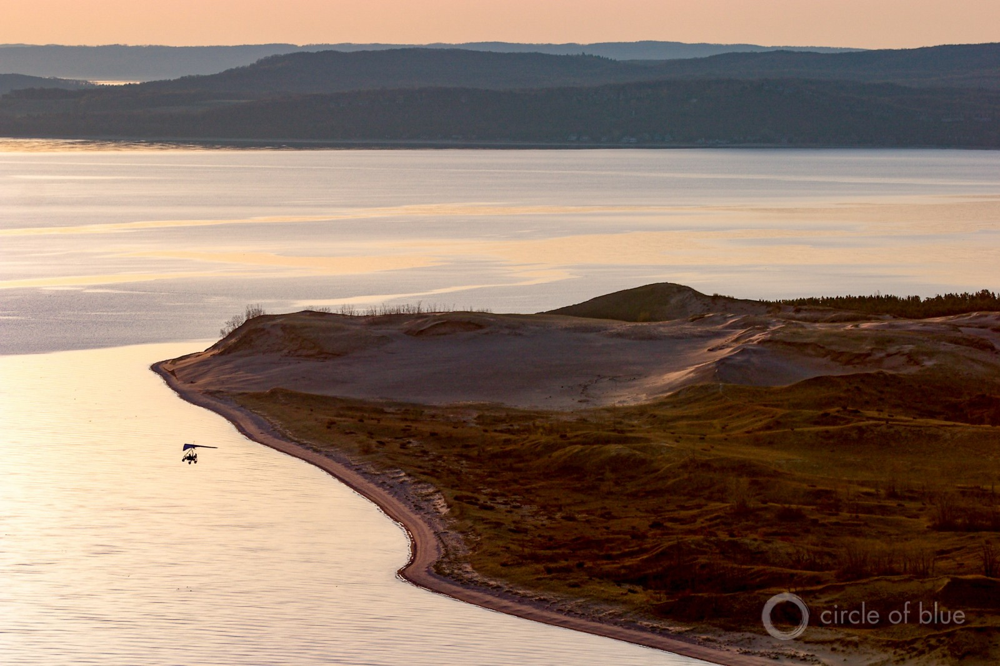

Federal Water Tap, April 11: Agency Officials Testify at Human Right to Water Hearing
The U.S. government testifies about domestic water access while a Senate committee held a hearing on water affordability.Klamath River dam removal is back on the table, with two new agreements.The White House warns about the health risks of climate change.The U.S. Geological Survey has funding available for a national groundwater data network.Glacier National Park wonders how to manage resources in an era of climate change.
'I literally cannot understand the most powerful country in the world having these kinds of stories about the lack of clean, potable water and sanitation.It blows my mind quite frankly.It is not the picture I have of the United States.'– Commissioner Margarette May Macaulay, a commissioner of the Inter-American Commission on Human Rights, at a hearing on water access in the United States.
8: Number of proposed new Superfund sites.(U.S. Environmental Protection Agency)
$US 4 million: Grants for improving a national groundwater monitoring network.The money will support local partners by bringing existing sites up to federal standards or by establishing new sites.(U.S. Geological Survey)
Right to Water Hearing Officials from four federal agencies testified at an Inter-American Commission on Human Rights hearing on access to water and sanitation in the United States.It was the first time the U.S. government had appeared before the commission to speak about water access.
The officials — Matthew McGrath from the State Department, Becki Clark from the Environmental Protection Agency, Bryan Greene from Housing and Urban Development, and Mark Calkins from Indian Health Service — enumerated the ways in which their agencies support, via regulation, enforcement, and financial assistance, clean drinking water.
The witnesses at the hearing were members of citizen groups who represent communities with polluted water and failing sewage systems: Navajo Nation people harmed by uranium mining, farmworker towns in California’s Central Valley burdened by nitrate pollution, Detroit residents shut off from water, and others.
The IACHR commissioners, though having only a few minutes for questions, were direct.Margarette May Macaulay, a lawyer from Jamaica, noted the hundreds of millions of dollars of foreign aid that the United States spends on drinking water and sanitation.'If you are doing that outside your borders, can you not do that in tandem [inside the country] so that nobody falls through the cracks?'she asked.'I literally cannot understand the most powerful country in the world having these kinds of stories about the lack of clean, potable water and sanitation.It blows my mind quite frankly.It is not the picture I have of the United States.'
Macaulay questioned the gap between agency policy and the outcomes on the ground.'What you’ve said sounds fantastic but they' — here she points to the witnesses — 'have fallen through the cracks.'She urged the federal agencies to do better.'If you do not protect the most vulnerable you are not a civilized society.'
Klamath Dam Removal Back on the Table State, federal, and tribal officials signed two new agreements to bring about peace in the Klamath River Basin of California and Oregon.If all goes to plan, an amended Klamath Hydroelectric Settlement Agreement will lead to the removal of four dams on the river in 2020 and the Klamath Power and Facilities Agreement will help the basin’s farmers, tribes, environmental groups, and government agencies manage the new system.
The agreement is an attempt to revive a comprehensive water-sharing and ecosystem restoration process that died last year when Congress did not approve legislation authorizing certain federal actions.Some of the management actions in the new plan — such as a transfer of ownership to the Bureau of Reclamation of two dams that will not be torn down — require Congress’s approval.
Water Affordability Hearing The Senate Committee on Environment and Public Works added to the growing water affordability debate by holding a hearing on the federal government’s role.
Democrats and Republican committee leaders agreed that more federal investment is needed.But they differed slightly in how to achieve affordability.Republicans called for loosening unidentified federal mandates that add to costs, increasing private involvement in water systems, and boosting investment.Democrats were leery of easing federal mandates and wanted to add money to two low-interest loan programs.
Sen.Barbara Boxer called baloney on the argument that the country cannot afford to fix its infrastructure by referencing the $US 2 trillion spent on the Iraq War.'We can afford the war,' Boxer said.'So we can afford this.'
Climate Change and Health As the planet warms, the United States will face more and new diseases as well as risks to wellbeing from temperatures, air and water pollution, and deteriorations in mental health, warns a White House report.
Flint Investigation Members of the EPA Office of the Inspector General were in Flint, Michigan, on Saturday, to interview community members about how the agency responded to their concerns.The inspector general is leading an investigation of the EPA’s handling of the city’s lead contamination.
Water Policy Week Trade groups and utility representations will flock to the Capitol for the National Water Policy Forum, Fly-In and Expo, an annual shindig for the water industry to discuss regulation and legislation with members of Congress.
Glacier National Park Responds to Climate Change Glacier National Park officials will evaluate whether to move native fish species within the park to help them survive in a warming world.The 'translocation' strategy will be assessed in an environmental review of options for managing fisheries in an era of climate change.
Stormwater from Construction Sites The EPA is beginning to review its general permit for regulating stormwater from construction sites.The new rules, which will be valid for five years, should go into effect in February 2017.
Federal Water Tap is a weekly digest spotting trends in U.S. government water policy.To get more water news, follow Circle of Blue on Twitter and sign up for our newsletter.
Brett writes about agriculture, energy, infrastructure, and the politics and economics of water in the United States.He also writes the Federal Water Tap, Circle of Blue’s weekly digest of U.S. government water news.He is the winner of two Society of Environmental Journalists reporting awards, one of the top honors in American environmental journalism: first place for explanatory reporting for a series on septic system pollution in the United States(2016) and third place for beat reporting in a small market (2014).He received the Sierra Club’s Distinguished Service Award in 2018.Brett lives in Seattle, where he hikes the mountains and bakes pies.Contact Brett Walton
Posted On: 2016-04-11T06:00:58
Posted By: Brett Walton

Content Date: 2016-04-11
Download Date: 2021-05-13
Document ID: L0C04BSPO